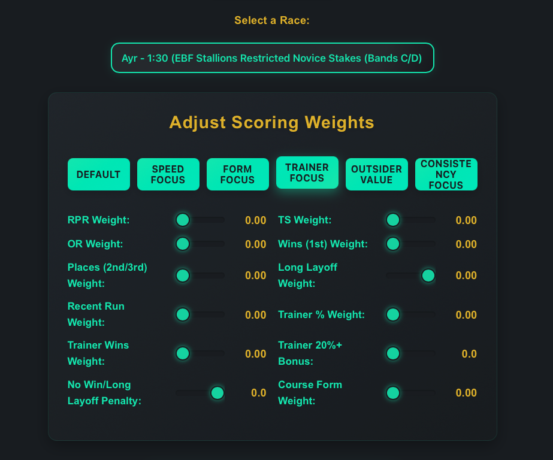

Smarter Horse Racing, Faster Wins
UK & Irish racing tips, live racecards & lightning-fast results — every meeting, every day.
Unique data-driven picks, value bets and custom score tools that keep you ahead of the bookies.
Quick Navigation
Today's Racecards
Full details for every UK & Irish meeting today — runners, form, odds & results.
Custom Score Tool
Rate horses your way — build your winning system using our live customizer.
Historical Results
Deep-dive every past meeting, check ROI and learn what wins — for free.
About Smart Racecards
How our data & edge can make you smarter than the bookies.
Today's Racecards
🔥 Today's Smart Picks
Data-powered value bets you won’t see plastered everywhere else. Click any horse for live card & price.
Custom Scoring: Your Edge, Your Way
Try our interactive scoring tool to rate horses on what you care about—form, speed, trainer stats, and more.
Try Custom Scoring Tool